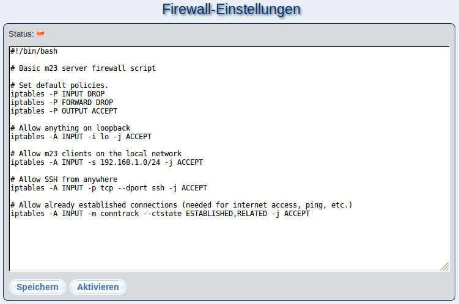

In diesem Dialog können Sie Firewallregeln für Ihren m23-Server anlegen und bearbeiten. Sollten Sie diese Seite das erste Mal öffnen, so werden einfache Firewallregeln erstellt, die alle Zugriffe (bis auf SSH) auf den m23-Server von außerhalb Ihres Netzwerkes abblocken.
Brauchen Sie weitergehende Regeln, so können Sie diese mittels iptables erstellen und in den Editor eingeben.
Zum Übernehmen der Einstellungen aus dem Editor klicken Sie auf ''Speichern'' bzw. auf ''Speichern und aktivieren''. Ist die Firewall deaktiviert, so werden die die Regeln aus dem Editor lediglich in der Datei
/m23/bin/firewall.sh
gespeichert. Bei aktivierter Firewall werden die neuen Regeln gespeichert und angewandt.
Mit ''Aktivieren'' und ''Deaktivieren'' können Sie die Firewall aktivieren bzw. deaktivieren.
Unterabschnitte
root
2016-10-07